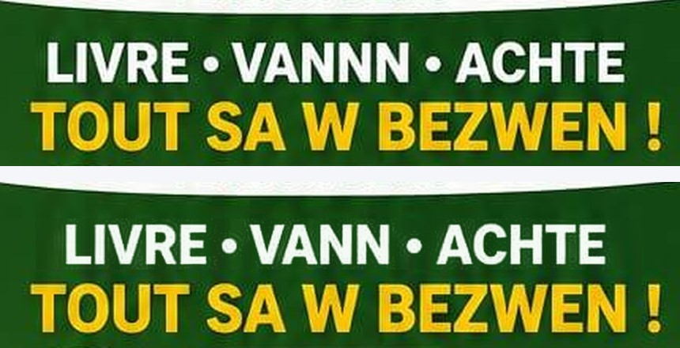

What to type, and the one thing never to ask it for
It cannot make one. It has never made one for you. It draws something that looks like a code and no phone can read it — three times now.
So ask it to leave an empty white square in the place where the code goes. That one line is at the end of both prompts below. Send me the picture and I drop the real code into the empty square. Minutes, and free.
The AI redraws the whole poster every time you ask for a change, so if I put the code on and you then ask it for one more change, the code is gone and we start again.
The AI board makes real codes. It is on the Digital tab, the item called QR Code. Pick "Any other link", type the address, and the code appears — point your own camera at the screen and it opens. Then Print quality saves it.
Open the AI boardThat is the whole difference in one line. The part of the toolkit that builds a code builds a real one. The part that draws pictures can only draw something that looks like one. Picture from the one, code from the other, put together afterwards.
This is your own flyer, written out as instructions. Tap the button, paste it into the AI, and it makes the same poster — with the empty square instead of the fake code.
Create a vertical marketing flyer, portrait, 2:3, at the highest resolution you can produce. Style: bold, modern, high contrast, print quality. Haitian colours - deep blue, red, dark green. Flat graphic design with real photographs of Haitian people. Layout, top to bottom: 1. White header band. On the left, a blue and red shield badge with a motorcycle and a car in it. In the centre, large text "MyPlopPlop.com" with "My" in green, "Plop" in red, "Plop" in green and ".com" in blue. Under it in blue: "Achte. Vann. Deplase. An Sekirite." Under that a yellow rounded button with dark text: "2 PLATFOM, 1 SOLISYON !" On the right, leave a clear space for the DASH logo. 2. Two panels side by side, the same size. Left panel, deep blue. White strip at the top with "MsouWout" and under it "PLATFOM TRANSPO". Headline in white and yellow: "MANDE CHOFE AN SEKIRITE !" Photograph of a smiling Haitian motorcycle taxi driver in a red and blue jacket and helmet giving a thumbs up, a white car behind him, a city skyline in the background. Right panel, dark green. White strip at the top with "MyPlopPlop.com" and under it "PLATFOM BIZNIS". Headline in white and yellow: "LIVRE - VANN - ACHTE TOUT SA W BEZWEN !" Photograph of a smiling Haitian delivery man in a green cap holding a cardboard box, next to a phone showing a shopping app and a basket of fresh food. 3. Under each panel, a row of four round icons, each with a two line caption. Under the left panel: "CHOFE VERIFYE", "KOUS AN SEKIRITE", "SIPO 24/7", "ASIRANS & DASH OK". Under the right panel: "LIVREZON RAPID", "PRI ABODAB", "PEYE SAN CASH", "SIPO 24/7". 4. A wide green band across both. On the left a shield with a green medical cross and the words "100% KOUVETI MEDIKAL AK DASH", under it in smaller white text "Si ta gen aksidan, DASH pran swen w !", and a clear space for the DASH logo. On the right a photograph of a happy Haitian family of four giving thumbs up. 5. A white band titled "3 MOUN KAP FE PLIS !" with three columns, each with a small icon, a coloured title and one line under it: blue - "VIN YON CHOFE" - "Fe lajan chak jou !" green - "VIN YON KLIYAN" - "Achte, livre, san soti lakay !" red - "VIN YON BIZNIS" - "Vann plis, jwenn plis kliyan !" Each column has a small button reading "ENSKRI GRATIS". 6. A dark blue footer band in three parts. Left, a red block: "ENSKRI JODI A !", under it in yellow "ESKANE QR CODE LA", under that in white "OSWA KONTAKTE NOU", with a white arrow pointing to the right. Centre: a plain white square, completely empty. Do not draw a QR code. Do not draw any pattern, dots, squares or symbols inside it. Leave it blank white. Right: three lines, each with a small icon - a WhatsApp icon with the text "WHATSAPP NUMBER", a globe icon with "www.MyPlopPlop.com", a Facebook icon with "MyPlopPlop HAITI". Under them the words "NOU AKSEPTE" with three small payment logos. 7. A thin dark blue strip at the very bottom with five small icons and words: "SEKIRITE", "FYAB", "RAPIDITE", "KONFYANS", "OPOTINITE". Spell every word exactly as it is written above. Do not translate anything. Do not add any words of your own.
Where it says WHATSAPP NUMBER, type your own number in before you send the prompt — and check it digit by digit on the picture that comes back. The AI changes numbers.
One deliberate difference from your flyer: the prompt asks for PRI ABODAB, not PRIX. See the last card — change it back if PRIX is what you want.
Create a vertical marketing flyer, portrait, 2:3, at the highest resolution you can produce. Style: bold, modern, high contrast, print quality. Deep blue, red and dark green on a white background. Flat graphic design with real photographs of Haitian people. Layout, top to bottom: 1. White header. On the left a logo badge with the letters L and M and a dollar sign. In the centre, large text "LajanMaker" with "Lajan" in blue and "Maker" in red, and under it the word "ACADEMY" in green, and under that in smaller letters "APRANN - VANN - FE LAJAN". On the right a dark blue rounded box with white and yellow text: "YON PLATFOM, MILYON POSIBILITE, YON AVNI PI MEYE POU TOUT MOUN !" 2. Three panels side by side, the same size. Panel one, blue heading strip: "MsouWout" and under it "PLATFOM TRANSPO". Below it in blue and red: "ENSKRI CHOFE - FE LAJAN CHAK JOU !" A photograph of a Haitian motorcycle taxi driver in a red and blue jacket next to a white car. Under the photo a list with blue tick marks: "Chofe Verifye", "Plis Pasaje", "Kous An Sekirite", "Sipo 24/7", "Pwoteksyon Medikal". At the bottom of the panel a blue box: "3% KOMISYON sou chak kous". Panel two, green heading strip: "MyPlopPlop.com" and under it "PLATFOM BIZNIS". Below it in green: "ENSKRI BIZNIS OU - OGMANTE VANT OU !" An illustration of a market stall on a phone screen with food, a shopping bag and a delivery box. Under it a list with green tick marks: "Plis Vizibilite", "Plis Kliyan", "Plis Vant", "Plis Revni", "Sipo Kliyan 24/7". At the bottom a green box: "3% KOMISYON sou chak vant". Panel three, red heading strip: "PWODWI DIJITAL" and under it in yellow "APRANN - KREYE - VANN". Below it in red: "VANN PLIS PASE 30 PWODWI DIJITAL AVEK 30% KOMISYON !" An illustration of a laptop with charts and a play button. Under it two columns of red tick marks: "Logo", "Kat Biznis", "Sit Entenet", "Rezime Egzekitif", "Pitch Deck", "Videyo Explainer", "& Plis anko !". At the bottom a red box: "30% KOMISYON sou chak lavant". 3. A light band across all three titled "SEVIS ADMINISTRATIF" with "10% KOMISYON" under the title, and five small icons in a row with captions: "Renouvelman Lisans", "Kreyasyon Asosyasyon", "Kreyasyon Konpayi", "Tradiksyon", "& Lot Sevis Administratif". 4. A dark blue band with four items in a row, each with a small icon: "PLATFOM FYAB & SEKIRITE", "OPOTINITE POU JEN, FANM AK TOUT MOUN", "PLIS REVNI SAN LIMIT", "SIPO & AKONPAYMAN". 5. A dark blue footer in three parts. Left, in yellow and red: "VIN YON AGENT LAJANMAKER - FE LAJAN TOUT JOU !" and under it four green tick lines: "Pa bezwen stock", "Pa bezwen gwo kapital", "Selman yon telefon", "Plis pase 30 sevis ak pwodwi". Centre: a red button reading "ENSKRI JODI A !", under it "Eskane QR Code la oswa kontakte nou.", an arrow pointing right, and then a plain white square, completely empty. Do not draw a QR code. Do not draw any pattern, dots, squares or symbols inside it. Leave it blank white. Right: three lines, each with a small icon - a WhatsApp icon with the text "WHATSAPP NUMBER", a globe icon with "HaitiBiznis.com/LajanMaker", a Facebook icon with "LajanMaker". Under them "NOU AKSEPTE" with three small payment logos. 6. A thin strip at the very bottom with four small icons and words: "1 PLATFOM", "4 SOLISYON", "MILYON POSIBILITE", "REVNI SAN LIMIT". Spell every word exactly as it is written above. Do not translate anything. Do not add any words of your own.
The accents are left off on purpose. The AI gets them wrong more often than it gets them right, and a missing accent is easier to live with than a wrong word. If it does put them in, check them.
The files it has been giving you are 1024 by 1536. That is fine for a hand flyer and good up to about 35 by 50 cm on a wall. Past that the photos go soft.
Ask for more in the same message and some tools give it. Add these two lines at the end of any prompt:
Produce this at the largest size and highest resolution available to you. Portrait, 2:3. Do not add any watermark, signature or logo of your own.
If what comes back is still 1024 wide, that is the tool's ceiling and no wording will move it. Tell me and we talk about the poster a different way.
Your MyPlopPlop flyer said VANNN, with three N. It has been on the file since the day the AI made it. I have taken the extra N out — same poster, nothing else touched.

This is the part no prompt can solve. Whatever comes back, read every line out loud before it goes to the printer. Words, the phone number, the website address. It only has to be wrong once and you have paid for a thousand of them.
One I left alone because it may be your choice: the flyer says PRIX ABODAB. PRIX is the French spelling; in Kreyol it is PRI. Tell me which you want and I change it in two minutes.
Copy a prompt above, paste it into the AI, add your number where it says WHATSAPP NUMBER.
Look at what comes back. Read every word. Ask it again until the writing is right — that is the only part that matters at this stage.
Check the code square is empty. If the AI drew a code in it anyway, tell it "leave the white square completely blank" and try again.
Send me the picture the way you send me everything else. I put the real code in the square and put it back here ready to print.
Step 4 is free and takes minutes. Do not print anything that has a code on it I have not put there.